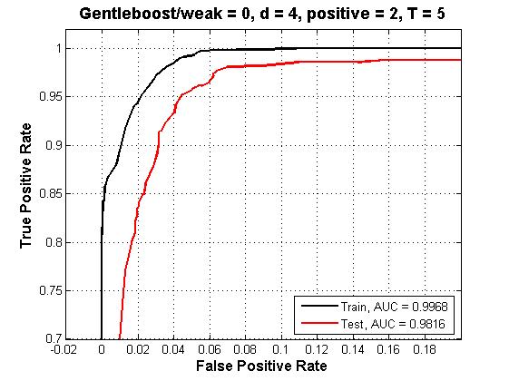
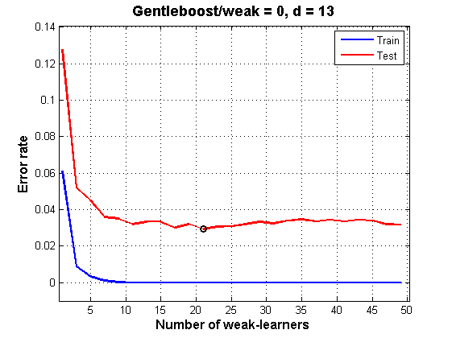
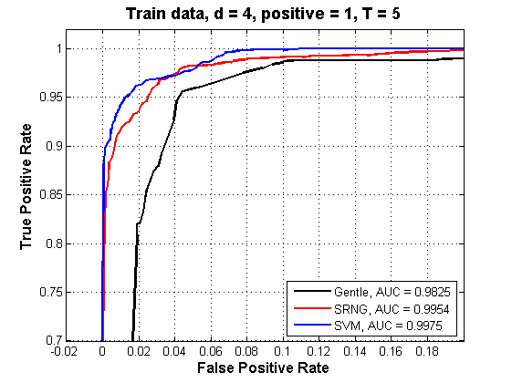
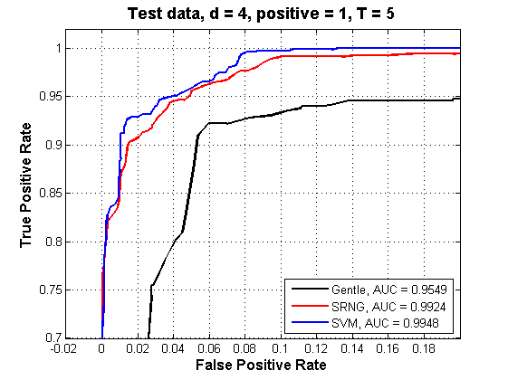

Contents
Example 1 : train, test errors and ROC cuves on IRIS data
clear, clc, close all,drawnow
load iris
labels = unique(y);
options.method = 7;
options.holding.rho = 0.7;
options.holding.K = 50;
options.weaklearner = 0;
options.epsi = 0.1;
options.lambda = 1e-2;
options.max_ite = 1000;
options.T = 5;
positive = labels(3);
ind_positive = find(labels==positive);
[d , N] = size(X);
[Itrain , Itest] = sampling(X , y , options);
[Ncv , Ntrain] = size(Itrain);
Ntest = size(Itest , 2);
error_train = zeros(1 , Ncv);
error_test = zeros(1 , Ncv);
tptrain = zeros(Ncv , 100);
fptrain = zeros(Ncv , 100);
tptest = zeros(Ncv , 100);
fptest = zeros(Ncv , 100);
for i=1:Ncv
[Xtrain , ytrain , Xtest , ytest] = samplingset(X , y , Itrain , Itest , i);
model_gentle = gentleboost_model(Xtrain , ytrain , options);
[ytrain_est , fxtrain] = gentleboost_predict(Xtrain , model_gentle);
error_train(i) = sum(ytrain_est~=ytrain)/Ntrain;
ytrain(ytrain ~=positive) = -1;
ytrain(ytrain ==positive) = 1;
[tptrain(i , :) , fptrain(i , :)] = basicroc(ytrain , fxtrain(ind_positive , :));
[ytest_est , fxtest] = gentleboost_predict(Xtest , model_gentle);
error_test(i) = sum(ytest_est~=ytest)/Ntest;
ytest(ytest ~=positive) = -1;
ytest(ytest ==positive) = 1;
[tptest(i , :) , fptest(i , :)] = basicroc(ytest , fxtest(ind_positive , :));
fprintf('%d/%d\n' , i , options.holding.K)
drawnow
end
fprintf('Error Train/Test %2.4f/%2.4f\n' , mean(error_train,2) , mean(error_test,2))
fptrain_mean = mean(fptrain);
tptrain_mean = mean(tptrain);
auc_train = auroc(tptrain_mean', fptrain_mean');
fptest_mean = mean(fptest);
tptest_mean = mean(tptest);
auc_test = auroc(tptest_mean', fptest_mean');
figure(1)
plot(fptrain_mean , tptrain_mean , 'k' , fptest_mean , tptest_mean , 'r' , 'linewidth' , 2)
axis([-0.02 , 0.2 , 0.7 , 1.02])
legend(sprintf('Train, AUC = %5.4f' , auc_train) , sprintf('Test, AUC = %5.4f' , auc_test) , 'location' , 'southeast')
xlabel('False Positive Rate' , 'fontsize' , 12 , 'fontweight' , 'bold')
ylabel('True Positive Rate' , 'fontsize' , 12 , 'fontweight' , 'bold')
title(sprintf('Gentleboost/weak = %d, d = %d, positive = %d, T = %d' , options.weaklearner , d , positive , options.T) , 'fontsize' , 13 , 'fontweight' , 'bold')
grid on
1/50
2/50
3/50
4/50
5/50
6/50
7/50
8/50
9/50
10/50
11/50
12/50
13/50
14/50
15/50
16/50
17/50
18/50
19/50
20/50
21/50
22/50
23/50
24/50
25/50
26/50
27/50
28/50
29/50
30/50
31/50
32/50
33/50
34/50
35/50
36/50
37/50
38/50
39/50
40/50
41/50
42/50
43/50
44/50
45/50
46/50
47/50
48/50
49/50
50/50
Error Train/Test 0.0328/0.0573

Example 2 : train, test errors versus number of weak-learners on WINE data
load wine
options.method = 7;
options.holding.rho = 0.7;
options.holding.K = 50;
options.weaklearner = 0;
options.epsi = 0.1;
options.lambda = 1e-2;
options.max_ite = 1000;
Tmin = 1;
stepT = 2;
Tmax = 50;
T = (Tmin:stepT:Tmax);
NT = length(T);
[d , N] = size(X);
[Itrain , Itest] = sampling(X , y , options);
[Ncv , Ntrain] = size(Itrain);
Ntest = size(Itest , 2);
error_train = zeros(NT , Ncv);
error_test = zeros(NT , Ncv);
for t = 1:NT
options.T = T(t);
for i=1:Ncv
[Xtrain , ytrain , Xtest , ytest] = samplingset(X , y , Itrain , Itest , i);
model_gentle = gentleboost_model(Xtrain , ytrain , options);
[ytrain_est , fxtrain] = gentleboost_predict(Xtrain , model_gentle);
error_train(t,i) = sum(ytrain_est~=ytrain)/Ntrain;
[ytest_est , fxtest] = gentleboost_predict(Xtest , model_gentle);
error_test(t,i) = sum(ytest_est~=ytest)/Ntest;
end
end
error_train_T = mean(error_train , 2);
error_test_T = mean(error_test , 2);
[mini , pos] = min(error_test_T);
figure(2)
plot(T , error_train_T , T , error_test_T , 'r' , T(pos) , mini , 'ko' , 'linewidth' , 2)
axis([0.5 , Tmax+0.25 , -0.01 , 1.1*max(max(error_train_T),max(error_test_T))])
xlabel('Number of weak-learners' , 'fontsize' , 12 , 'fontweight' , 'bold')
ylabel('Error rate' , 'fontsize' , 12 , 'fontweight' , 'bold')
title(sprintf('Gentleboost/weak = %d, d = %d' , options.weaklearner , d ) , 'fontsize' , 13 , 'fontweight' , 'bold')
legend('Train' , 'Test')
grid

Example 3 : train, test errors and ROC cuves on IRIS data versus classifiers : Gentleboost, SRNG, SVM
load iris
labels = unique(y);
options.method = 7;
options.holding.rho = 0.7;
options.holding.K = 50;
options.weaklearner = 0;
options.epsi = 0.1;
options.lambda = 1e-2;
options.max_ite = 1000;
options.T = 5;
options.epsilonk = 0.005;
options.epsilonl = 0.001;
options.epsilonlambda = 10e-8;
options.sigmastart = 2;
options.sigmaend = 10e-4;
options.sigmastretch = 10e-3;
options.threshold = 10e-10;
options.xi = 0.1;
options.nb_iterations = 3000;
options.metric_method = 1;
options.shuffle = 1;
options.updatelambda = 1;
options.Nproto_pclass = 4*ones(1 , length(labels));
options.s = 1;
options.gamma = 0.01;
options.nu = 0.2;
options.C = 1;
options.b = 1;
options.t = 0;
options.strcmd = ['-s ' num2str(options.s) ' -g ' num2str(options.gamma) ' -c ' num2str(options.C) ' -t ' num2str(options.t) ' -b ' num2str(options.b)];
positive = labels(2);
ind_positive = find(labels==positive);
[d , N] = size(X);
[Itrain , Itest] = sampling(X , y , options);
[Ncv , Ntrain] = size(Itrain);
Ntest = size(Itest , 2);
error_train_gentle = zeros(1 , Ncv);
error_test_gentle = zeros(1 , Ncv);
error_train_srng = zeros(1 , Ncv);
error_test_srng = zeros(1 , Ncv);
error_train_svm = zeros(1 , Ncv);
error_test_svm = zeros(1 , Ncv);
tptrain_gentle = zeros(Ncv , 100);
fptrain_gentle = zeros(Ncv , 100);
tptest_gentle = zeros(Ncv , 100);
fptest_gentle = zeros(Ncv , 100);
tptrain_srng = zeros(Ncv , 100);
fptrain_srng = zeros(Ncv , 100);
tptest_srng = zeros(Ncv , 100);
fptest_srng = zeros(Ncv , 100);
tptrain_svm = zeros(Ncv , 100);
fptrain_svm = zeros(Ncv , 100);
tptest_svm = zeros(Ncv , 100);
fptest_svm = zeros(Ncv , 100);
for i=1:Ncv
drawnow
[Xtrain , ytrain , Xtest , ytest] = samplingset(X , y , Itrain , Itest , i);
model_gentle = gentleboost_model(Xtrain , ytrain , options);
[ytrain_est_gentle , fxtrain_gentle] = gentleboost_predict(Xtrain , model_gentle);
error_train_gentle(i) = sum(ytrain_est_gentle~=ytrain)/Ntrain;
[yproto , Wproto , lambda] = ini_proto(Xtrain , ytrain , options.Nproto_pclass);
[yproto_est , Wproto_est , lambda_est, E_SRNG] = srng_model(Xtrain , ytrain , options , yproto , Wproto , lambda);
[ytrain_est_srng , disttrain_srng] = NN_predict(Xtrain , yproto_est , Wproto_est , lambda_est , options);
error_train_srng(i) = sum(ytrain_est_srng~=ytrain)/Ntrain;
model_svm = svmtrain(ytrain' , Xtrain' , options.strcmd);
[ytrain_est_svm , accuracy , fxtrain_svm] = svmpredict(ytrain' , Xtrain' , model_svm , ['-b 1']);
error_train_svm(i) = sum(ytrain_est_svm'~=ytrain)/Ntrain;
indextarget = find(model_svm.Label==positive);
ytrain(ytrain ~=positive) = -1;
ytrain(ytrain ==positive) = 1;
[tptrain_gentle(i , :) , fptrain_gentle(i , :)] = basicroc(ytrain , fxtrain_gentle(ind_positive , :));
dktrain = min(disttrain_srng(yproto~=positive , :));
dltrain = min(disttrain_srng(yproto==positive , :));
fxtrain_srng = (dktrain - dltrain)./(dktrain + dltrain);
[tptrain_srng(i , :) , fptrain_srng(i , :)] = basicroc(ytrain , fxtrain_srng);
[tptrain_svm(i , :) , fptrain_svm(i , :)] = basicroc(ytrain , fxtrain_svm(: , indextarget)');
[ytest_est_gentle , fxtest_gentle] = gentleboost_predict(Xtest , model_gentle);
error_test_gentle(i) = sum(ytest_est_gentle~=ytest)/Ntest;
[ytest_est_srng , disttest_srng] = NN_predict(Xtest , yproto_est , Wproto_est , lambda_est , options);
error_test_srng(i) = sum(ytest_est_srng~=ytest)/Ntest;
[ytest_est_svm , accuracy , fxtest_svm] = svmpredict(ytest' , Xtest' , model_svm , ['-b 1']);
error_test_svm(i) = sum(ytest_est_svm'~=ytest)/Ntest;
ytest(ytest ~=positive) = -1;
ytest(ytest ==positive) = 1;
[tptest_gentle(i , :) , fptest_gentle(i , :)] = basicroc(ytest , fxtest_gentle(ind_positive , :));
dktest = min(disttest_srng(yproto~=positive , :));
dltest = min(disttest_srng(yproto==positive , :));
fxtest_srng = (dktest - dltest)./(dktest + dltest);
[tptest_srng(i , :) , fptest_srng(i , :)] = basicroc(ytest , fxtest_srng);
[tptest_svm(i , :) , fptest_svm(i , :)] = basicroc(ytest , fxtest_svm(: , indextarget)');
fprintf('%d/%d\n' , i , options.holding.K)
drawnow
end
disp([mean(error_train_gentle) , mean(error_train_srng) , mean(error_train_svm) ; mean(error_test_gentle) , mean(error_test_srng) , mean(error_test_svm)])
fptrain_mean_gentle = mean(fptrain_gentle);
tptrain_mean_gentle = mean(tptrain_gentle);
auc_train_gentle = auroc(tptrain_mean_gentle', fptrain_mean_gentle');
fptest_mean_gentle = mean(fptest_gentle);
tptest_mean_gentle = mean(tptest_gentle);
auc_test_gentle = auroc(tptest_mean_gentle', fptest_mean_gentle');
fptrain_mean_srng = mean(fptrain_srng);
tptrain_mean_srng = mean(tptrain_srng);
auc_train_srng = auroc(tptrain_mean_srng', fptrain_mean_srng');
fptest_mean_srng = mean(fptest_srng);
tptest_mean_srng = mean(tptest_srng);
auc_test_srng = auroc(tptest_mean_srng', fptest_mean_srng');
fptrain_mean_svm = mean(fptrain_svm);
tptrain_mean_svm = mean(tptrain_svm);
auc_train_svm = auroc(tptrain_mean_svm', fptrain_mean_svm');
fptest_mean_svm = mean(fptest_svm);
tptest_mean_svm = mean(tptest_svm);
auc_test_svm = auroc(tptest_mean_svm', fptest_mean_svm');
figure(3)
plot(fptrain_mean_gentle , tptrain_mean_gentle , 'k' , fptrain_mean_srng , tptrain_mean_srng , 'r' , fptrain_mean_svm , tptrain_mean_svm , 'b' , 'linewidth' , 2)
axis([-0.02 , 0.2 , 0.7 , 1.02])
legend(sprintf('Gentle, AUC = %5.4f' , auc_train_gentle) , sprintf('SRNG, AUC = %5.4f' , auc_train_srng) , sprintf('SVM, AUC = %5.4f' , auc_train_svm) , 'location' , 'southeast')
xlabel('False Positive Rate' , 'fontsize' , 12 , 'fontweight' , 'bold')
ylabel('True Positive Rate' , 'fontsize' , 12 , 'fontweight' , 'bold')
title(sprintf('Train data, d = %d, positive = %d, T = %d' , d , positive , options.T) , 'fontsize' , 13 , 'fontweight' , 'bold')
grid on
figure(4)
plot(fptest_mean_gentle , tptest_mean_gentle , 'k' , fptest_mean_srng , tptest_mean_srng , 'r' , fptest_mean_svm , tptest_mean_svm , 'b' , 'linewidth' , 2)
axis([-0.02 , 0.2 , 0.7 , 1.02])
legend(sprintf('Gentle, AUC = %5.4f' , auc_test_gentle) , sprintf('SRNG, AUC = %5.4f' , auc_test_srng) , sprintf('SVM, AUC = %5.4f' , auc_test_svm) , 'location' , 'southeast')
xlabel('False Positive Rate' , 'fontsize' , 12 , 'fontweight' , 'bold')
ylabel('True Positive Rate' , 'fontsize' , 12 , 'fontweight' , 'bold')
title(sprintf('Test data, d = %d, positive = %d, T = %d' , d , positive , options.T) , 'fontsize' , 13 , 'fontweight' , 'bold')
grid on
1/50
2/50
3/50
4/50
5/50
6/50
7/50
8/50
9/50
10/50
11/50
12/50
13/50
14/50
15/50
16/50
17/50
18/50
19/50
20/50
21/50
22/50
23/50
24/50
25/50
26/50
27/50
28/50
29/50
30/50
31/50
32/50
33/50
34/50
35/50
36/50
37/50
38/50
39/50
40/50
41/50
42/50
43/50
44/50
45/50
46/50
47/50
48/50
49/50
50/50
0.0360 0.0320 0.0250
0.0564 0.0484 0.0404
 